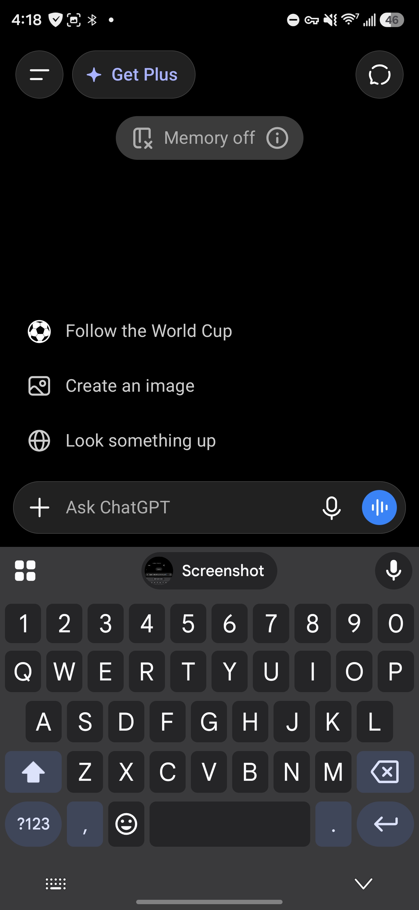
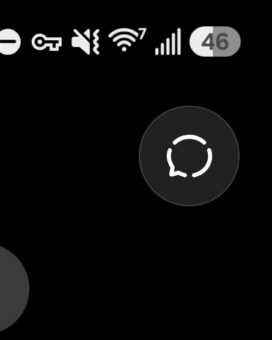

Introduction to ChatGPT (Android & Web)
A quick-start guide to installing ChatGPT on Android, writing your first structured prompt, and moving laterally to the desktop browser.
1Install ChatGPT and Start a Temporary Chat
Prerequisite: This guide assumes you already have a Google account and access to the Google Play Store on your Android device.
Install and Sign In:
- Open the Google Play Store.
- Search for "ChatGPT" by OpenAI.
- Download and install the app, then open it.
- Sign in using your preferred method.
Start a Temporary Chat:
Temporary chats are separate from your regular chat history and are not used to create or update memories.
- From the main chat screen, select Temporary Chat. (Often found by tapping the top right corner).


- Verify that the conversation is marked as temporary.
- Use this for prompt experimentation, one-time research, or privacy-sensitive drafting where you want a clean session separated from your regular history.
2Use a Simple Prompt Structure
Many people start by typing a question and hoping for a useful answer. A better approach is to give the AI a clear structure using this reliable pattern:
Role → Task → Context → Constraints → Output Format
- Role: Tell the AI what perspective or expertise to use. (e.g., "Act as an experienced project manager.")
- Task: State exactly what you want done. (e.g., "Create a project plan for launching an online business.")
- Context: Provide relevant background information. (e.g., "The business will sell digital products. The budget is $2,000.")
- Constraints: Specify requirements or limitations. (e.g., "Keep costs under $2,000. Do not use paid advertising.")
- Output Format: Tell the AI how to present the answer. (e.g., "Provide the answer as a four-column table.")
Key Principle: The quality of the output is determined by the quality of the instructions. Clear roles, tasks, context, constraints, and output formats usually produce more accurate results than short, vague prompts.
3Share a Screenshot with ChatGPT
If you want ChatGPT to analyze what you see on your screen, you can provide it with an image.
Option 1: Upload from gallery (Recommended)
- Take a screenshot on your Android device.
- Open ChatGPT and tap the "+" button (or attachment icon) next to the message box.
- Select Gallery / Photos, choose your screenshot, and send it.
Option 2: Copy and paste
- Open your screenshot in the gallery and tap Share → Copy (if available).
- Long-press inside the ChatGPT message box and tap Paste.
4Optional: Reset Advertising Data (System-Level)
This setting is part of Android/Google advertising services and is separate from ChatGPT. It clears stored advertising profiles used for personalized ads across your device.
Users may reset this when changing usage context (e.g., moving from personal to business-focused activity) or to reduce long-term ad profiling. You can typically find this in Google Account → Ads settings or Android settings → Privacy → Ads.
5Cross-Device Continuation (App to Web)
You can easily move laterally from your Android device to a desktop browser (Windows, Linux, or macOS) and continue the exact same conversation.
- Open the chat in the ChatGPT Android app.
- Tap the three dots (⋯) in the top-right corner.
- Select Share.
- Choose Copy link (preferred) or send it to yourself via email/message.
- Open a web browser (Chrome, Firefox, etc.) on your computer.
- Sign in to your ChatGPT account if prompted, and open the shared link.


The same server-hosted conversation will load, allowing you to continue chatting in the browser.
Next Step: Now that you are on your desktop browser, it's time to set up your baseline identity globally. Proceed to the Desktop ChatGPT Memory & Custom Instructions Tutorial →